FactoryOS AI
27 of 45+ iOS screens. Designed thumb-first, one-handed, for the factory floor.
Mobile App

27+ Screens — Optimized for thumb reach and high-noise environments.
Desktop Dashboards
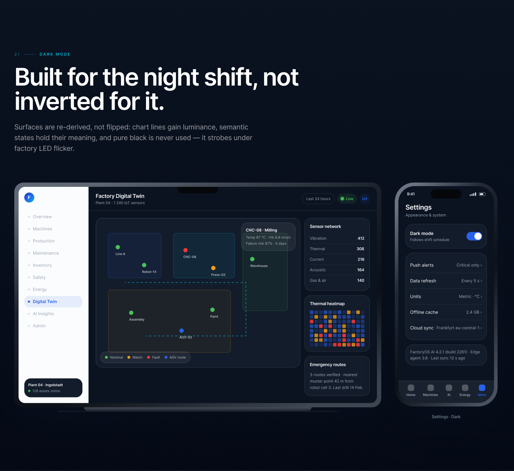
Worker Safety — Vision AI & real-time zone alerts.
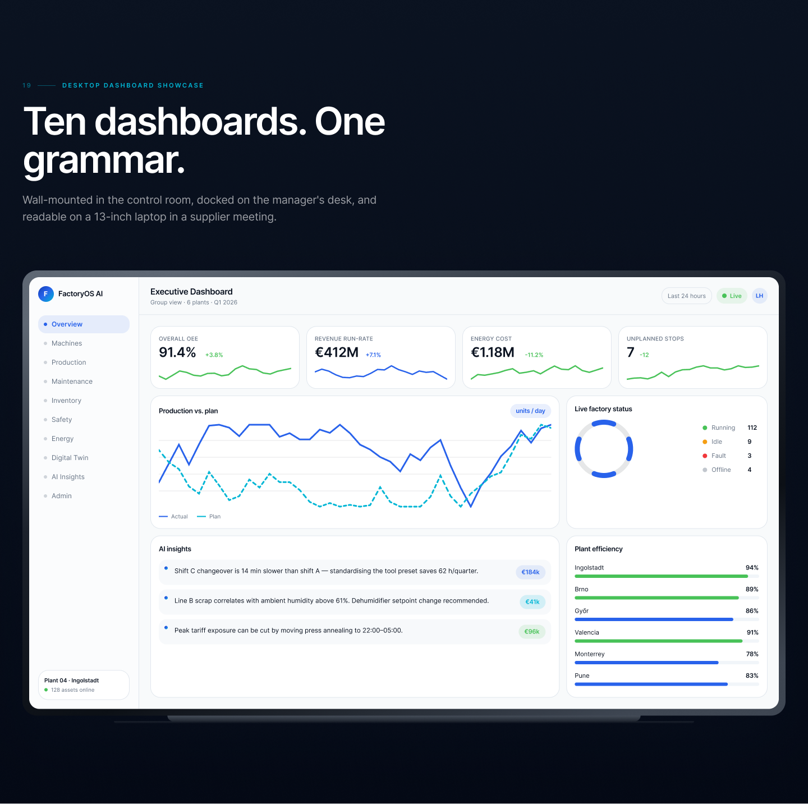
Energy & Sustainability — ISO 50001 real-time reporting.
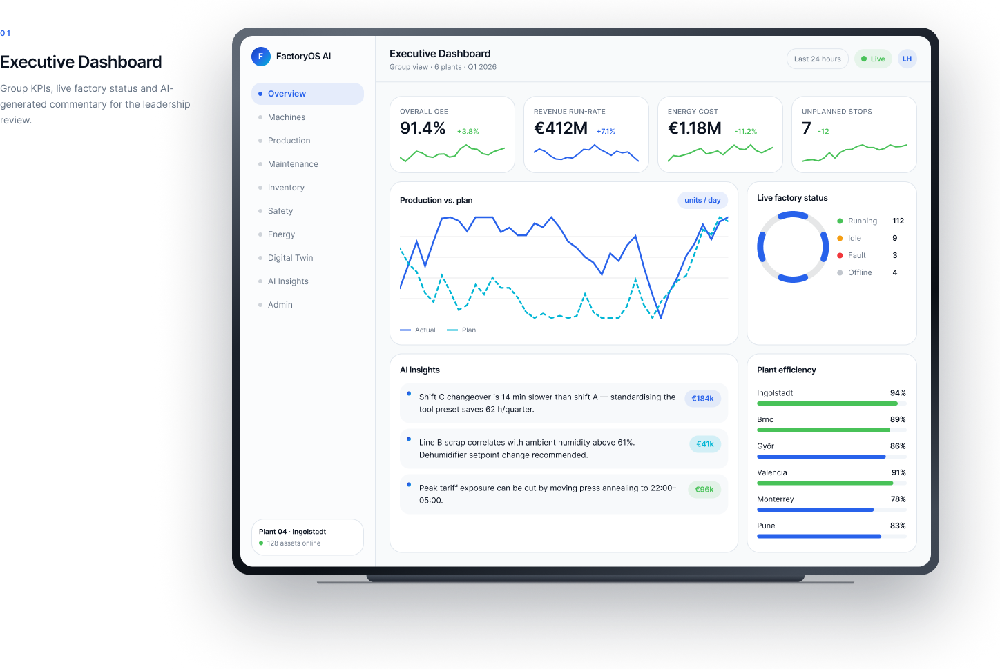
AI Insights — Predictive maintenance & automation.
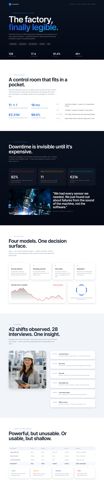
Predictive Maintenance — Failure curves & planning calendars.
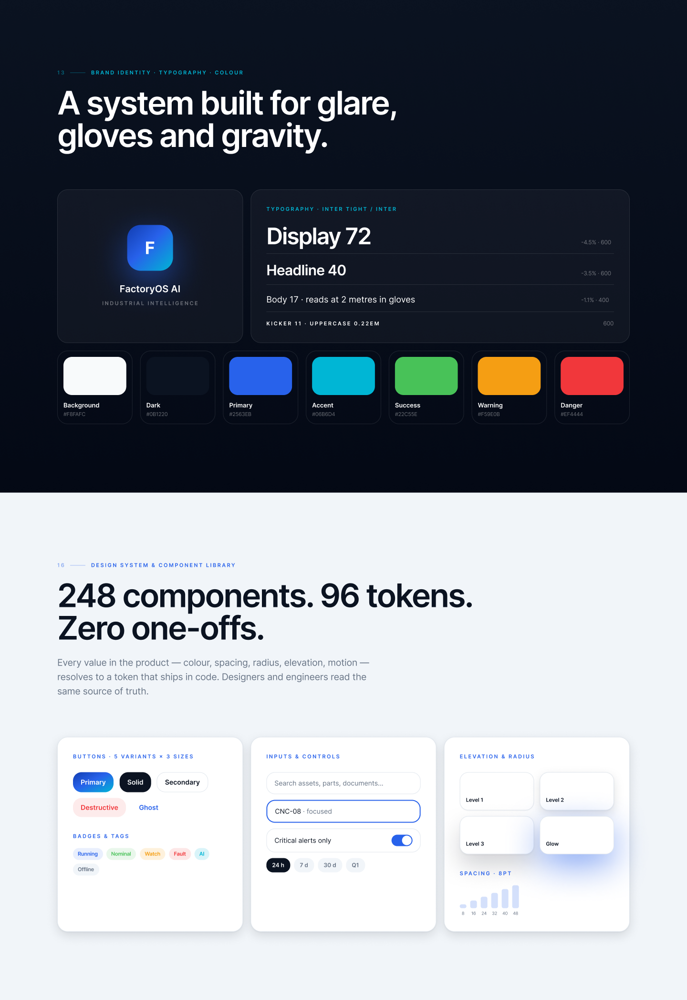
Digital Twin — Sensor overlays & emergency routing.
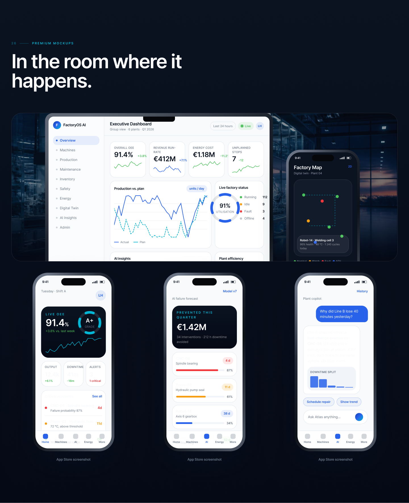
Admin Console — Users, integrations, & API billing.
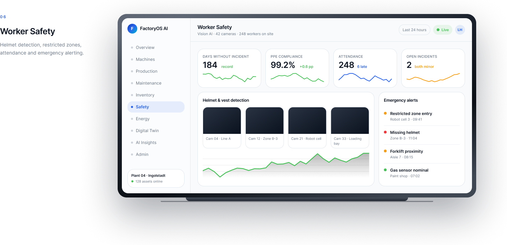
Production Analytics — Quality, output, and shift tracking.
Design & Strategy
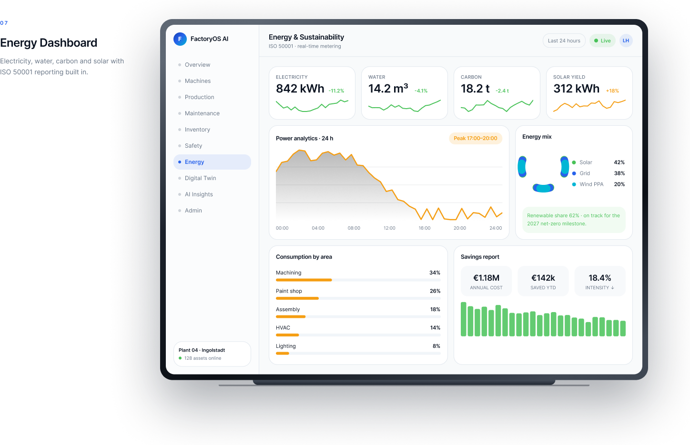
User Personas — Three different operational tempos.
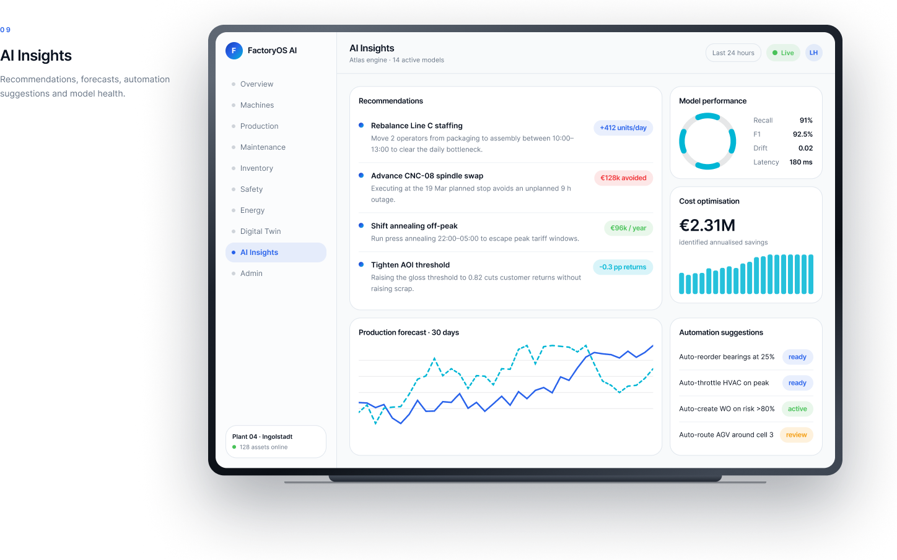
Information Architecture — User flows under 3 taps.
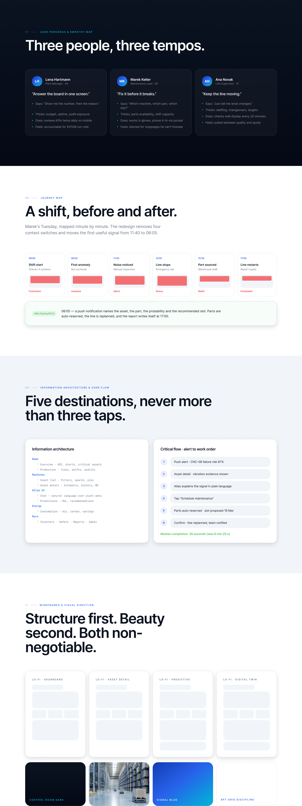
Structure First — Low-fidelity wireframing strategy.
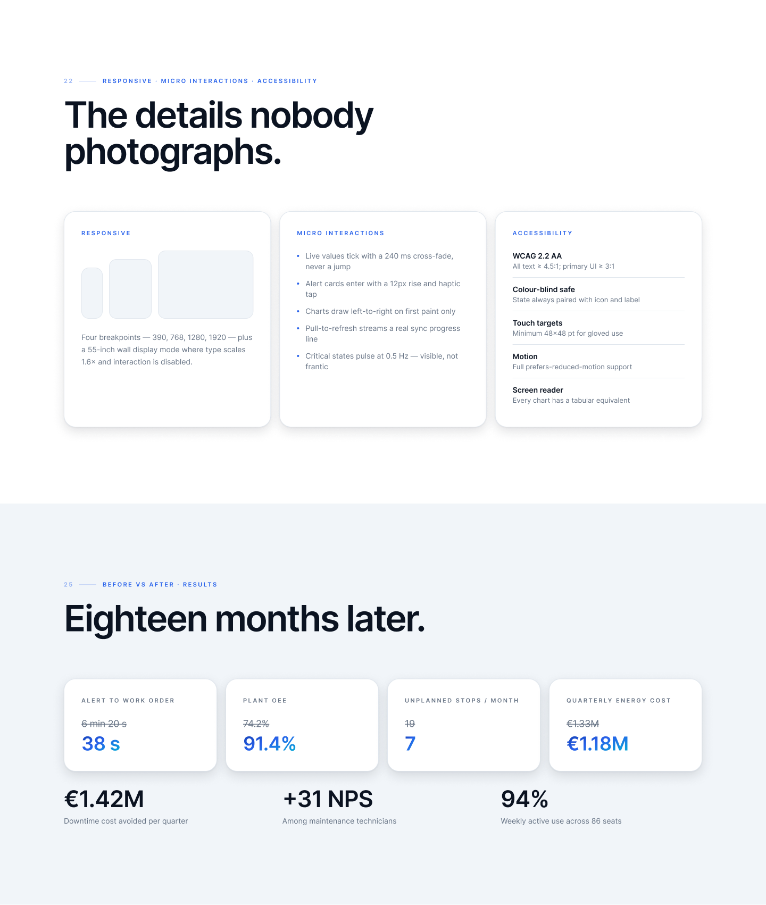
Brand Identity — Designed for glare and gloves.
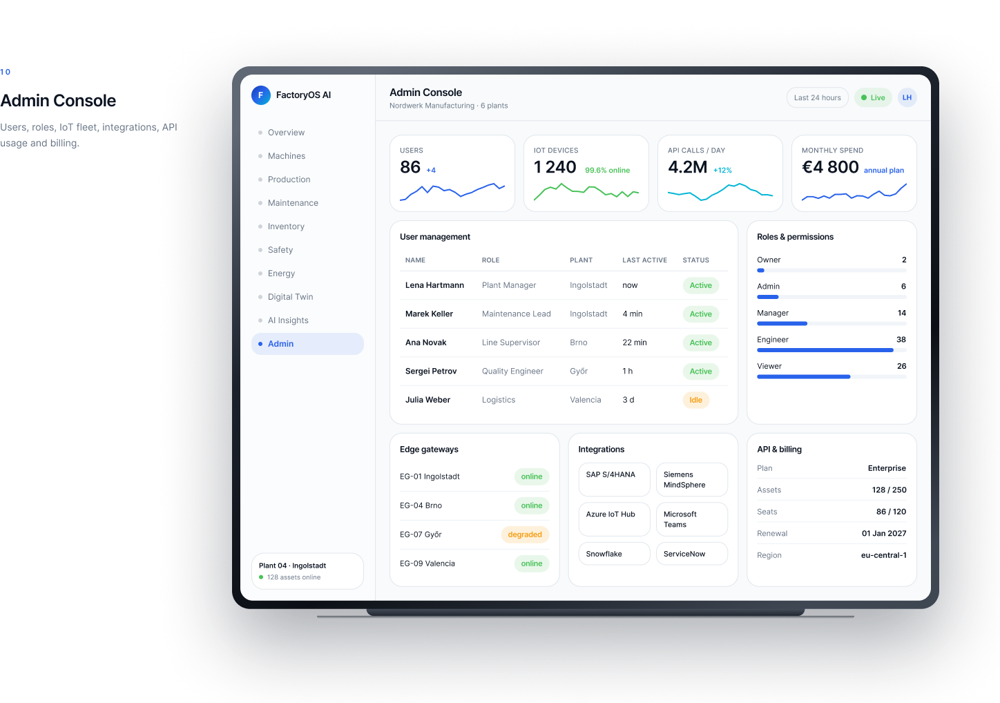
Component Library — 96 tokens, zero one-offs.
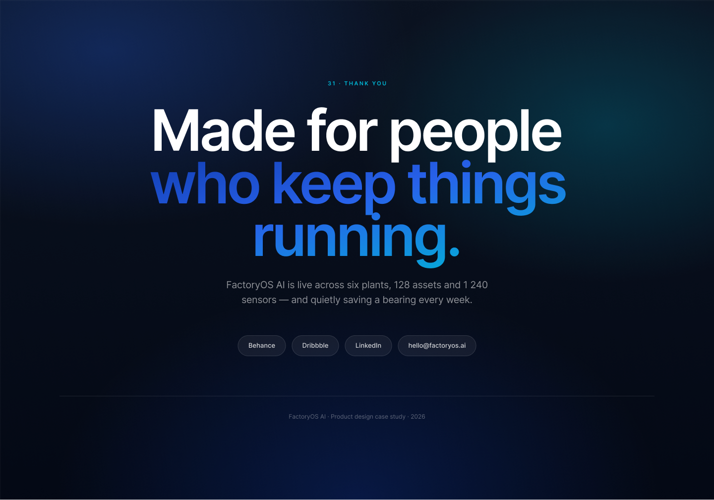